Индустрия
SpaceX установила рекорд IPO с ценой акций $135 и оценкой в $75 млрд
SpaceX провела крупнейшее IPO в истории — $75 млрд при цене $135 за акцию
TechCrunch AI
11 июн.Релизы, исследования, продукты, инвестиции и AI-рынок.
Архив · 741 новостных материалов · Автоматическое пополнение приостановлено
SpaceX провела крупнейшее IPO в истории — $75 млрд при цене $135 за акцию

Эксперимент по оптимизации не промптов, а всего агентного рантайма с помощью генетических алгоритмов — результат +17-25% метрики.

Сорок лет от статистики слов до ChatGPT: ключевые точки истории языковых моделей
Четвёртый управляющий партнёр YC: Дайана Ху, партнёр 230 стартапов
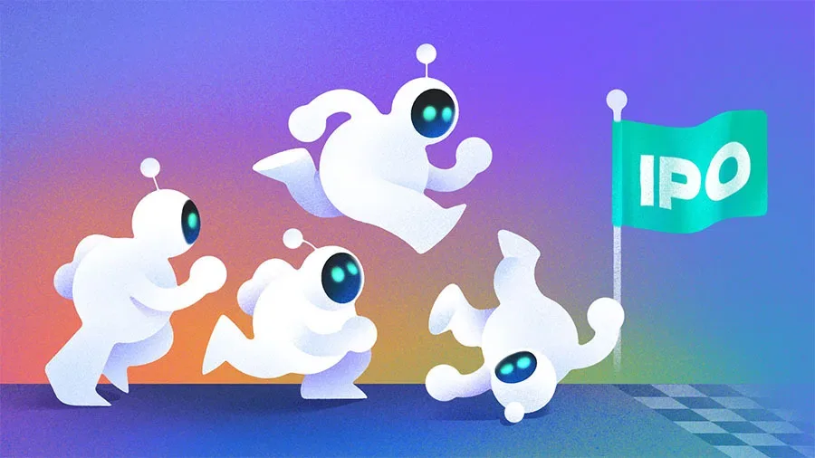
SpaceX, OpenAI, Anthropic выходят на биржу — но деньги достанутся не всем. Кому и почему
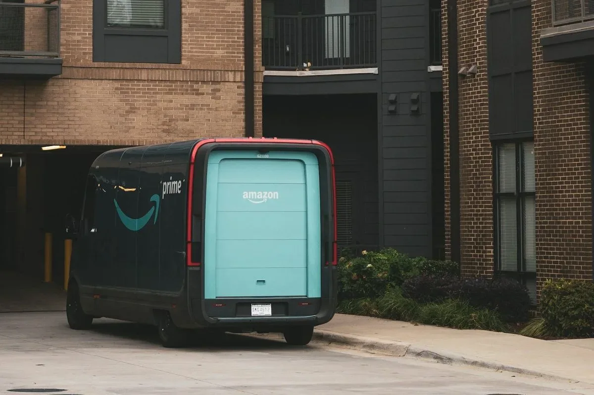
Amazon обновила софт Rivian-фургонов: кондиционер глохнет через 30 секунд после выхода водителя.
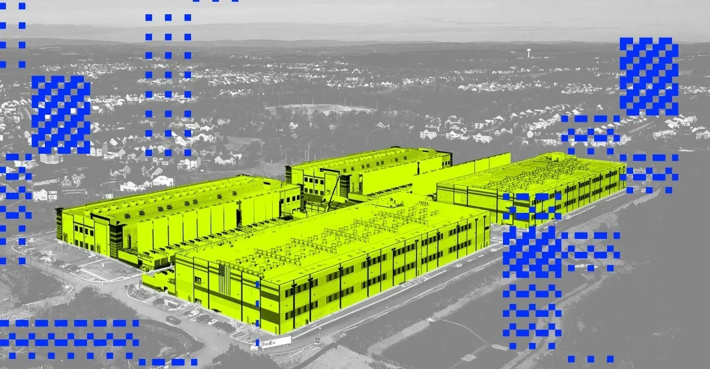
Amazon впервые раскрыла водопотребление дата-центров: 2,5 млрд галлонов, на 2% меньше, чем годом ранее.

Stack Overflow тестирует платформу, где ИИ-агенты обмениваются решениями, но сообщество сомневается в её необходимости.
ИИ перепишет ваш рецепт и передаст данные врачу — как работает «Цифровой нутрициолог»

Квест по настройке Claude Code и Antigravity для работы из России: от proxychains до запуска на VPS.

170 техник атак на ИИ за три месяца — как MITRE ATLAS помогает выстроить защиту ML-систем
Модель Qwen3-235B от Alibaba, выпущенная в июле 2025, всё ещё лидирует по соотношению цены и качества в очном тесте с конкурентами.
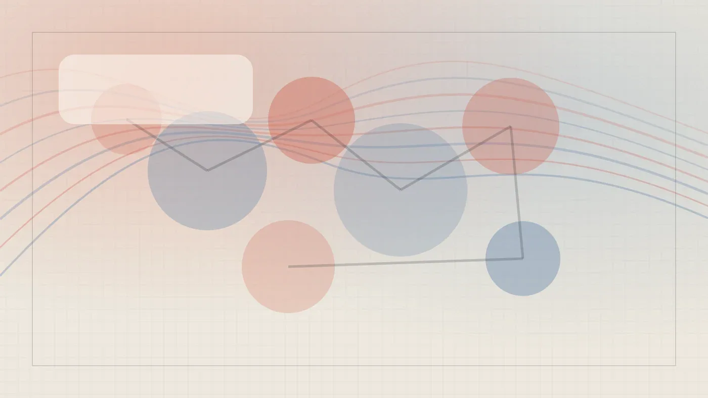
Content ИИ собрала ИИ-ревьюер кода за 3 дня — как устроена архитектура и что выяснилось через месяц
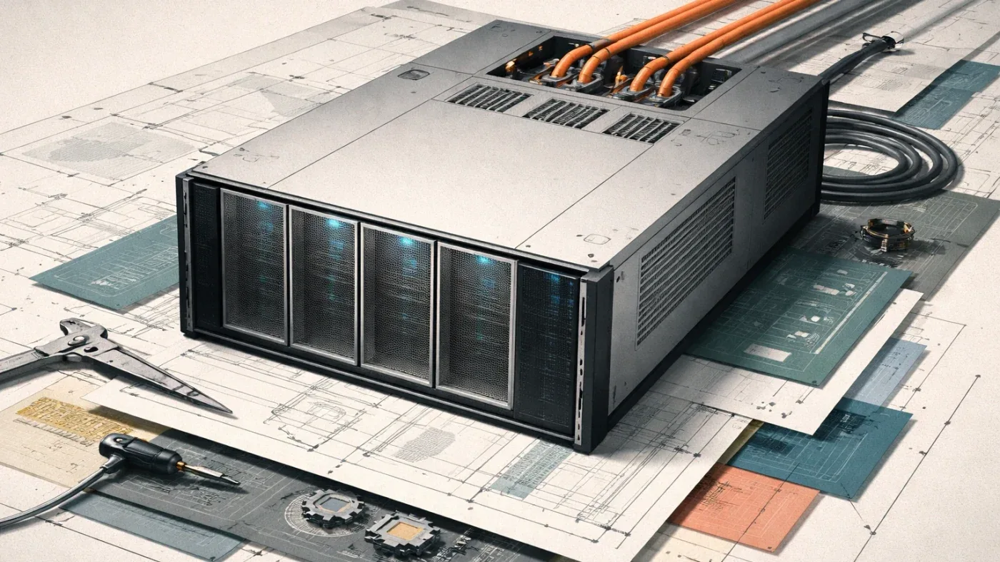
Почему ИИ начинается не с модели, а с инфраструктуры: опыт ПСМ по созданию ИИ ready модульного ЦОДа.
Нечитаемый код от ИИ — не дефект, а следствие когнитивной асимметрии
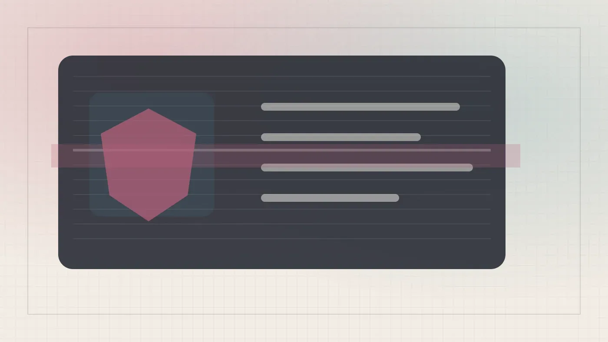
Почему kd-tree ломается при 768 измерениях и как IVF с HNSW обходят это ограничение
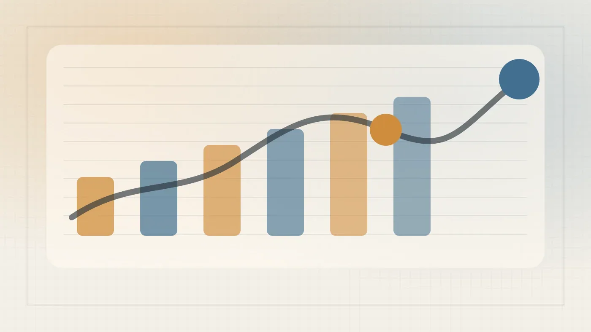
SpaceX выходит на биржу: $75 млрд, xAI в составе и орбитальные ИИ-серверы

Base10 Partners закрыла два фонда на $850 млн для инвестиций в автоматизацию реальной экономики
Почему ChatGPT, Claude и Gemini снова и снова пишут про смотрителя маяка Элиаса Торна
Flock утекла данные полицейских запросов по номерам — они оказались в DuckDuckGo и Bing.

Amazon строит дата-центры в Миссисипи — местные жители платят за это из своих счетов за свет
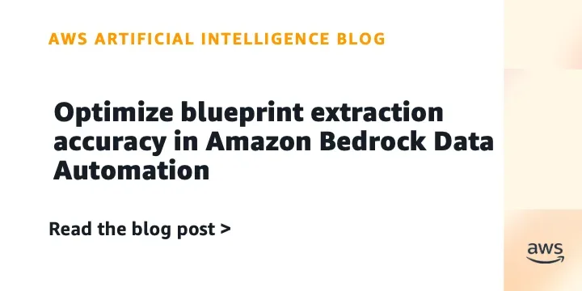
Новая функция Amazon Bedrock Data Automation автоматически улучшает точность извлечения данных за минуты — достаточно 3–10 примеров.
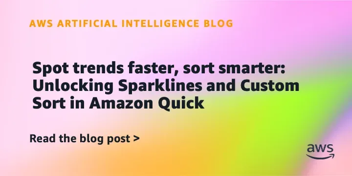
Amazon Quick Sight добавил спарклайны и кастомную сортировку для ускорения анализа данных прямо в таблицах.
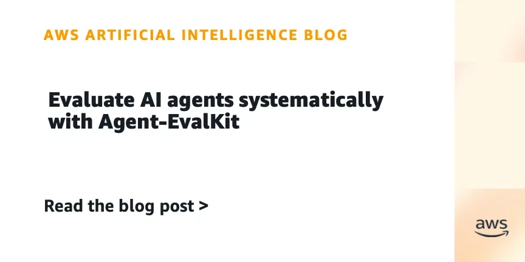
AWS открыла инструмент, который ловит галлюцинации ИИ-агентов до того, как они попадут в продакшн
DoorDash запускает Ask DoorDash — чатбот для заказа еды и продуктов по тексту и фото.
ИИ-приложение Pool находит оригинальные ссылки к вашим скриншотам — рецептам, товарам и афишам
Deezer создала инструмент для выявления ИИ-музыки в плейлистах любых стриминговых сервисов.
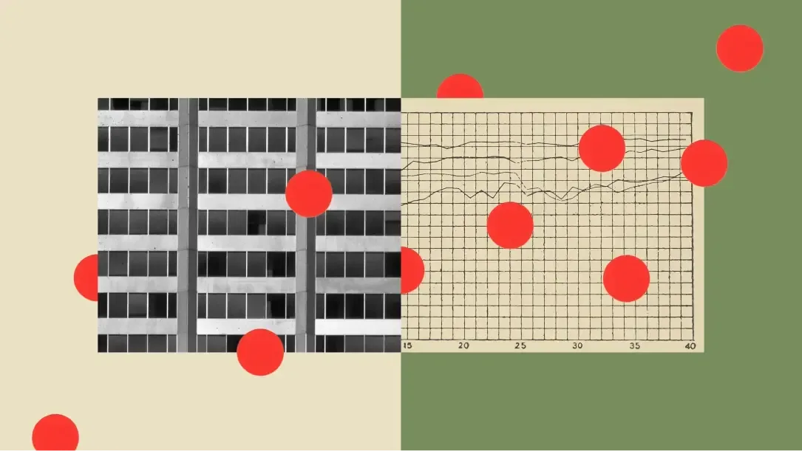
Anthropic хочет, чтобы государство могло блокировать опасные ИИ-модели — как FAA блокирует самолёты
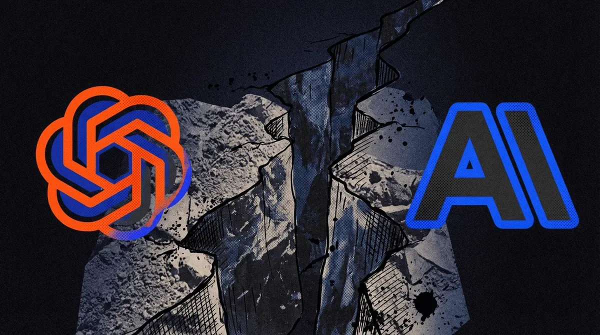
Токены дорожают, клиенты уходят: OpenAI и Anthropic готовятся к ценовой войне за API
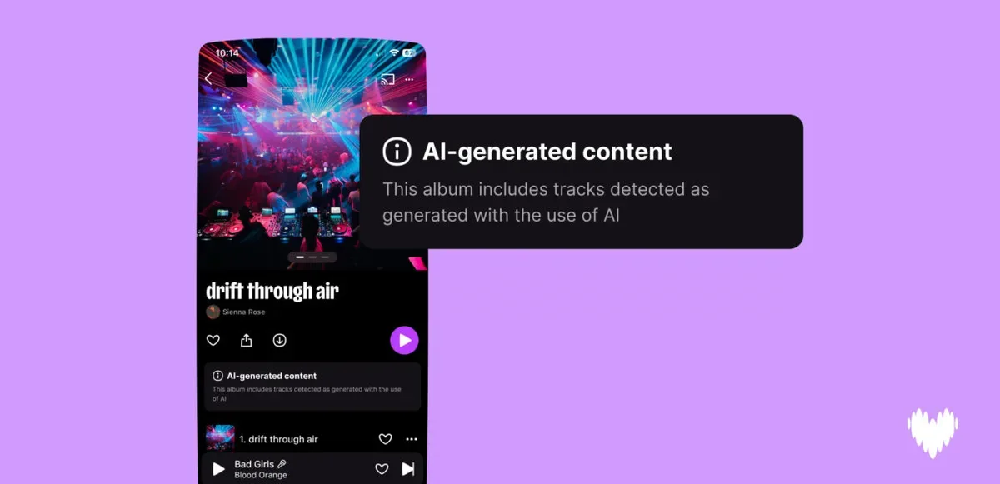
97% слушателей не слышат разницы. Deezer сделал детектор, который слышит